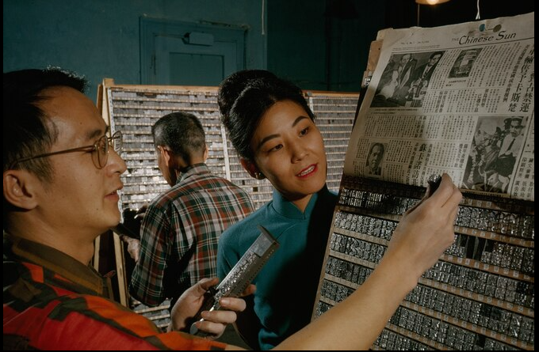
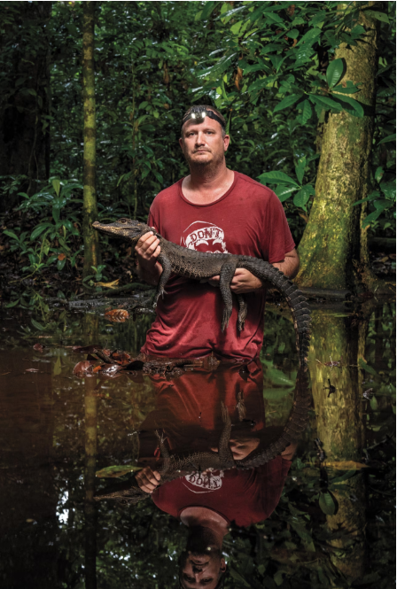
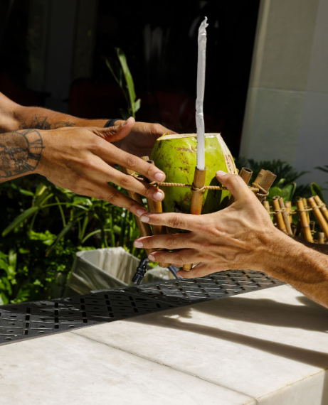
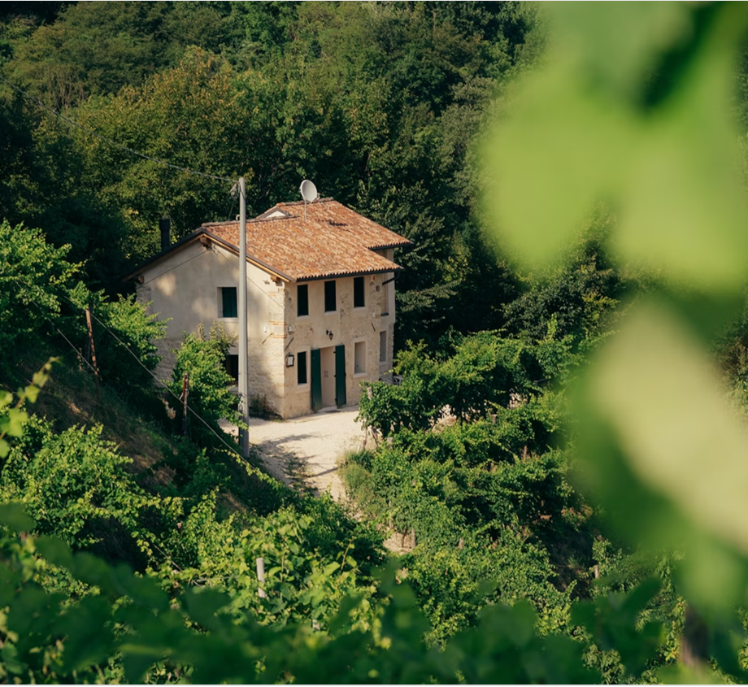
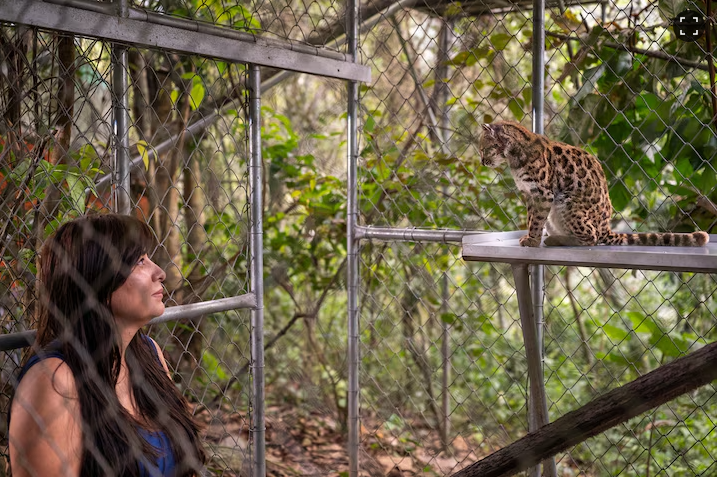
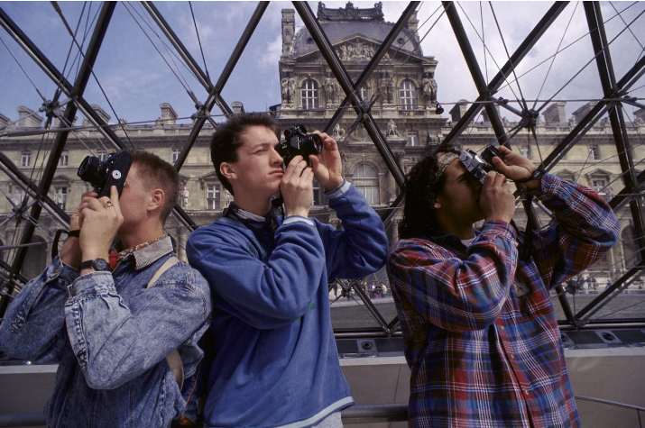

Veritas Media Lab
你看到的，往往只是世界的一角。
Veritas Media Lab 通过打破信息孤岛，将原本平行的媒体叙事强行并置。在这个充斥着算法过滤的空间里，我们致力于重塑你对事实的感知维度。



突破信息茧房
在社交网络的过滤气泡中，人们只听得到自己观点的回声。信息的投喂使得认知逐渐闭合，客观性随之流失。
我们使用 Python 后端技术，实时同步全球截然不同的资讯节点。这种视角的旋转与切换，正是打破思维惯性的第一步。
机器还是人类？
随着生成式 AI 的崛起，"真相"不再被记录，而是被算力合成。文本的完美对称、平滑且缺乏逻辑顿挫的宏大叙事，正逐渐污染互联网语料库。
引入图灵盲测机制。面对每一条新闻，你都需要独立判断它的创作者。结合底层 DeepSeek 引擎的 PIE 分析逻辑，培养应对未来合成媒体时代的媒介素养。



TRUTH
抵达真实
当伪装被剥离，当你穿透这层由算法与偏见编织的迷雾，你将看到一个清晰、不加滤镜的世界。
现在，进入真相实验室。
Hello, Truth
基于 SIFT 与 PIE 双核心模型。无论你需要核查什么，从这里开始。
Live News Sources.
对比不同媒体语境下的同一世界。实验数据切片加载完成。
后端新闻源
UN News (联合国)
Global Edition正在连接 Flask 新闻服务…
今日头条
Local Trending正在连接 Flask 新闻服务…